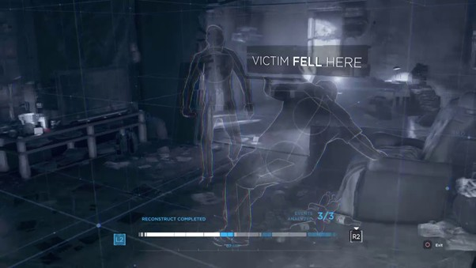

백발의 푸석푸석한 머리카락이 한쪽 눈을 가린다. 허리께까지 오는 머리카락을 아래로 느슨하게 내려 묶었으며 눈은 진한 회색. 피부조차도 창백한 빛을 띄어 전체적으로 색소라는것이 쏙 빠진듯한 무채색이다. 본인 기준으로 왼쪽 눈이 백색의 역안이며, 그 반대편 눈을 가로지르는 모스 부호의 문신이 있다.
말수가 적고 과묵하다. 그 탓인지 낮고 갈라진 목소리를 가졌다. 입을 여는 것 자체를 싫어하는지 검은색 마스크를 자주 끼곤 해서, 입만 닫고 있으면 굉장히 어려운 인상-속된 말로 신비주의라고 한다- 으로 보일 수 있으나, 1지부 인원들의 이야기를 듣자니 그런 건 또 아닌 것 같다. 편한 사람들 앞에선 쓸데없이 말이 많아진다. 정찰 및 출동 시 롱코트형의 제복 유니폼을 입으며 본부 안에서는 후드 차림을 자주 볼 수 있다.
차분함과 거침없음은 공존할 수 있다. 의외의 강행돌파형 불도저 드라이버. 우유부단함은 그와 가장 거리가 먼 단어다. 성공률이 낮아보이는 상황도, 무모한 판단이라고 생각될만한 행동도 앞장서 지휘한다. 특징이라면 그가 강행한 모든 것들이 빠지지 않고 성공한다는 점이다. 다른 이의 입장에서 보기에는 무모한 선택일지 모르겠으나, 이는 아이러니하게도 수많은 고민과 프리뷰를 거친 후 실행되는 “가장 효율적이며 현재 실행 가능한” 루트인데, 필히 밑에 서술될 그의 능력 덕이다.
발화점이 굉장히 높은 데다가 기본적으로 말수가 적은 탓에 속내를 알기 어렵다. 몇 마디 꺼내는 말로도 기분에 대한 이야기는 잘 하지 않는 상당히 직관적인 사람. 그러나 조금이라도 그와 함께 시간을 보내봤다면, 본질적으로 선한 사람. 또 사적으로는 어딘가 허술한 구석이 많은 사람이라는 사실을 알 수 있을 것이다.
PREVIEW
역안의 눈은 상황 재구성 능력이 있다. 자신이 가정한 상황을 실루엣의 형태로 눈 앞에 그대로 재생시킬 수 있다. 실제 있었던 과거를 보는 능력은 아니기에 본인이 판단한대로 눈 앞에 나타난다. (맨 밑에 예시를 첨부합니다!)
또한, 순간적으로 뉴런 활동 속도를 10배 이상 상승시키는 것이 가능하다. 말인 즉슨 1초동안 10초 상당의 생각과 판단을 할 시간이 그에게 주어진다. 절체절명의 순간에서도 게임의 선택지를 양 쪽에 놓고 판단하듯이, 그는 "운 좋게 맞은 판단"은 내리지 못 할지언정 "충동적인 판단"도 내리지 않는다. 짧은 시간에 현명한 판단은 이루어지지 않는다. 이러한 능력과, 드라이버의 직책답게 팀원들에게 명령을 내리는 일이 많다. 이 상태를 유지시키는 것은 약 5초 정도가 한계로, 한계까지 상태 지속 이후에는 약간의 울렁거림을 동반해 임무 외에는 잘 쓰지 않는다. (아마도!)
벡스터는 얻은 단서들을 놓고 무슨 일이 있었는지 해당 상황을 재구성하거나, 두 가지 능력을 동시에 운용해 지금 여기서 행동할 시 무슨 일이 벌어지는지를 볼 수 있다. (가령, 피해자가 가해자에게 밀쳐 넘어져 머리를 다친다면 이 핏자국과 일치할지, 민트가 여기서 낫을 휘둘렀을때 기둥을 쳐 건물이 무너질지, 또는 앞에 있는 바나나를 밟고 저 사람이 넘어질지를 본다.) 그는 과거를 보는 사람도, 미래를 보는 사람도 아니기에 그가 추측한 것이, 그가 일어날 거라고 예견한 것이 반드시 맞아 떨어지지는 않는다.
이와 더불어 평균 이상의 시력, 감지 능력, 민첩성을 타고난다. 밸런스를 유지하는 역할인만큼 히트맨 정도의 민첩성은 아니기에 많은 총기류를 소지하는 동시에, 체술을 거르지 않고 훈련한다.

8살 즈음. 트러블슈터 설립 무렵에 본부에 들어왔다. 3섹터의 한 일반인 가정에서 자라던 아이로, 부모가 제기하는 아이의 특이점은 다음과 같았다.
" 아주 착하고 올바른 아이였어요. 밝은 성격에, 친구를 도와줄 줄도 알고, 잘 웃고, 그런데... 5살 즈음이던가? 어느 순간 아이가 입을 꾹 다물어버리고 한 마디도 하지 않게 되었어요. 단 한 마디도요. 그렇게 좋아하던 놀이터도, 유치원도 데려가려고 하면 숨죽여 버티며 울지를 않나, 혼자 공허하게 허공만 쳐다보고 있는 일이 많아졌죠. 친구들 사이에서도 이상하다며 괴롭힘당하기 일쑤였고, 어딘가 가지 말아야 한다고 그 애가 옷자락을 당기면... 공사 중인 건물의 잔해가 떨어진다거나, 차 사고가 일어난다거나. 이상하지 않나요? 꼭... 미래를 보는 것 같이요."
아이를 병동에 데려간 부모의 발언 중 일부. 현재는 거의 절연한 상태나 마찬가지다. 보스는 아이를 병동이 아닌 정부설립 특수 교육시설에서 교육하겠다는 말과 함께 데려갔고, 요원이 되기 위한 훈련은 그 때부터 시작된다. 다섯살 남짓까지 나잇대 소년의 평균 키를 가졌었으나 8살 이후로 갑자기 키가 훌쩍 커 버린다. 기관에서 지내는 중에도 아이들 사이의 스포츠(축구 등)에는 자주 참가하지 못 했다. "존재가 반칙"이라는 이유에서였다. (딱히 흥미도 없었다, 고 본인은 말한다.)
어떤 훈련/임무(미정!) 중 한쪽 눈에 극심한 통증과 함께 본부로 실려온다. 눈의 흰자가 물들듯이 역안이 되어 버렸으며, 다른쪽 눈에 모스 부호의 흉터가 나타난다. "이건 벌이에요." 눈물을 뚝뚝 흘리며, 아이는 처음으로 닫았던 입을 뗀다. 반대편 눈은 환상이 보이지 않게 되었으며, 역안의 눈은 흐릿하던 환상이 실루엣의 형태로 아주 또렷하게 보이게 된다. 이 특성을 보이자, 콘실리에리와 짧은 상담을 마친 아이는 바로 제 1지부로 (전은 제 3지부) 이동하게 되었고, 곧바로 캡틴의 자리에 오른다.
* 역사에는 되게 신성한... 예언자 또는 예견하는 자 의 타이틀로 불리고 그렇게 그려지지만 사실은꽤 인간적인 사람
* 예언자가 바랐던 행복은 그냥 동료들이랑 같이 하하호호 모험하며 지내는... 그런 돌아갈 곳이 있는, 또는 가족같은 거였는데 모두가 이렇게 영웅적으로 소멸함에(제물이라고 하나요) 분노하면서 죽은 걸 수도 있겠다는 생각이 드네요
* 근데 창작물에서 "예견"이라는게 그렇듯이... 미래는 생각지 못한(예:차원을 넘은, 시공간을 넘은) 누군가의 개입으로 바뀔 수도 있는거고 세상이 멸망할거라고 예언자는 말했지만 멸망 안 할것 같지... 1세대의 능력도 좀 "예언"보다는 "직감"에 가까운... 아아 300년 후에 미래 기술이 도래하시니... 같은 예언이 아니고 저 크리쳐를 봤더니 쟤가 무리를 불러오고 그래서 우리가 털리는 미래가 보인다... 야 빨리 도망치자<같은 미래를 보는 것